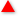

Mail 欄に表示されるアイコンの意味
Mail 欄に表示されるアイコンの意味
BathyScaphe でスレッドを閲覧すると、Mail 欄の内容によって、アイコンが表示されます（アイコンを表示しないようにもできます）。
- は、Mail 欄の内容が「age」のときに表示されます。
 は、Mail 欄の内容が「sage」のときに表示されます。
は、Mail 欄の内容が「sage」のときに表示されます。
 は、その他の内容が Mail 欄に書かれている場合に表示されます。ポインタをアイコンに合わせると、Mail 欄の内容を見ることができます。
は、その他の内容が Mail 欄に書かれている場合に表示されます。ポインタをアイコンに合わせると、Mail 欄の内容を見ることができます。
Mail 欄表示のオプションを設定する方法については、「一般」を設定するをお読みください。